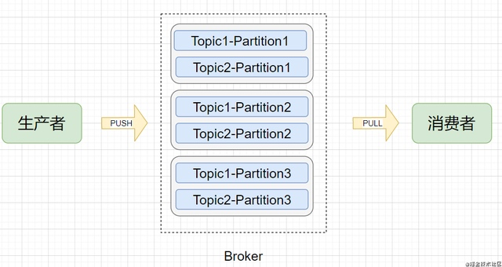
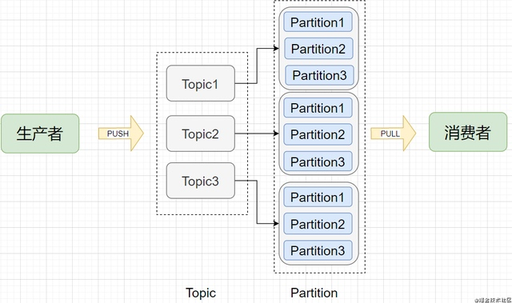
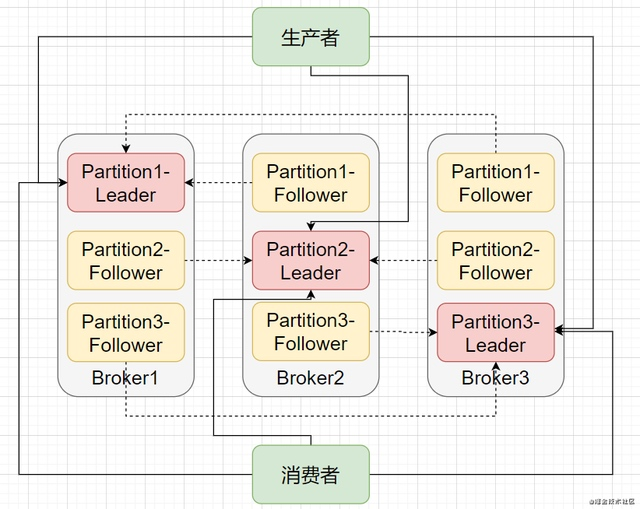

因为一次Kafka宕机，我明白了Kafka高可用原理
Kafka宕机引发的高可用问题
问题要从一次Kafka的宕机开始说起。
笔者所在的是一家金融科技公司，但公司内部并没有采用在金融支付领域更为流行的RabbitMQ，而是采用了设计之初就为日志处理而生的Kafka，所以我一直很好奇Kafka的高可用实现和保障。从Kafka部署后，系统内部使用的Kafka一直运行稳定，没有出现不可用的情况。
但最近系统测试人员常反馈偶有Kafka消费者收不到消息的情况，登陆管理界面发现三个节点中有一个节点宕机挂掉了。但是按照高可用的理念，三个节点还有两个节点可用怎么就引起了整个集群的消费者都接收不到消息呢？
要解决这个问题，就要从Kafka的高可用实现开始讲起。
Kafka的多副本冗余设计
不管是传统的基于关系型数据库设计的系统，还是分布式的如zookeeper、redis、Kafka、HDFS等等，实现高可用的办法通常是采用冗余设计，通过冗余来解决节点宕机不可用问题。
首先简单了解Kafka的几个概念：
物理模型

逻辑模型

- Broker（节点）：Kafka服务节点，简单来说一个Broker就是一台Kafka服务器，一个物理节点。
- Topic（主题）：在Kafka中消息以主题为单位进行归类，每个主题都有一个Topic Name，生产者根据Topic Name将消息发送到特定的Topic，消费者则同样根据Topic Name从对应的Topic进行消费。
- Partition（分区）：Topic（主题）是消息归类的一个单位，但每一个主题还能再细分为一个或多个Partition（分区），一个分区只能属于一个主题。主题和分区都是逻辑上的概念，举个例子，消息1和消息2都发送到主题1，它们可能进入同一个分区也可能进入不同的分区（所以同一个主题下的不同分区包含的消息是不同的），之后便会发送到分区对应的Broker节点上。
- Offset（偏移量）：分区可以看作是一个只进不出的队列（Kafka只保证一个分区内的消息是有序的），消息会往这个队列的尾部追加，每个消息进入分区后都会有一个偏移量，标识该消息在该分区中的位置，消费者要消费该消息就是通过偏移量来识别。
其实，根据上述的几个概念，是不是也多少猜到了Kafka的多副本冗余设计实现了？别急，咱继续往下看。
在Kafka 0.8版本以前，是没有多副本冗余机制的，一旦一个节点挂掉，那么这个节点上的所有Partition的数据就无法再被消费。这就等于发送到Topic的有一部分数据丢失了。
在0.8版本后引入副本记者则很好地解决宕机后数据丢失的问题。副本是以Topic中每个Partition的数据为单位，每个Partition的数据会同步到其他物理节点上，形成多个副本。
每个Partition的副本都包括一个Leader副本和多个Follower副本，Leader由所有的副本共同选举得出，其他副本则都为Follower副本。在生产者写或者消费者读的时候，都只会与Leader打交道，在写入数据后Follower就会来拉取数据进行数据同步。

就这么简单？是的，基于上面这张多副本架构图就实现了Kafka的高可用。当某个Broker挂掉了，甭担心，这个Broker上的Partition在其他Broker节点上还有副本。你说如果挂掉的是Leader怎么办？那就在Follower中在选举出一个Leader即可，生产者和消费者又可以和新的Leader愉快地玩耍了，这就是高可用。
你可能还有疑问，那要多少个副本才算够用？Follower和Leader之间没有完全同步怎么办？一个节点宕机后Leader的选举规则是什么？
直接抛结论:
多少个副本才算够用？ 副本肯定越多越能保证Kafka的高可用，但越多的副本意味着网络、磁盘资源的消耗更多，性能会有所下降，通常来说副本数为3即可保证高可用，极端情况下将replication-factor参数调大即可。
Follower和Lead之间没有完全同步怎么办？ Follower和Leader之间并不是完全同步，但也不是完全异步，而是采用一种ISR机制（In-Sync Replica）。每个Leader会动态维护一个ISR列表，该列表里存储的是和Leader基本同步的Follower。如果有Follower由于网络、GC等原因而没有向Leader发起拉取数据请求，此时Follower相对于Leader是不同步的，则会被踢出ISR列表。所以说，ISR列表中的Follower都是跟得上Leader的副本。
一个节点宕机后Leader的选举规则是什么？ 分布式相关的选举规则有很多，像Zookeeper的Zab、Raft、Viewstamped Replication、微软的PacificA等。而Kafka的Leader选举思路很简单，基于我们上述提到的ISR列表，当宕机后会从所有副本中顺序查找，如果查找到的副本在ISR列表中，则当选为Leader。另外还要保证前任Leader已经是退位状态了，否则会出现脑裂情况（有两个Leader）。怎么保证？Kafka通过设置了一个controller来保证只有一个Leader。
Ack参数决定了可靠程度
另外，这里补充一个面试考Kafka高可用必备知识点：request.required.asks参数。
Asks这个参数是生产者客户端的重要配置，发送消息的时候就可设置这个参数。该参数有三个值可配置：0、1、All。
第一种是设为0，意思是生产者把消息发送出去之后，之后这消息是死是活咱就不管了，有那么点发后即忘的意思，说出去的话就不负责了。不负责自然这消息就有可能丢失，那就把可用性也丢失了。
第二种是设为1，意思是生产者把消息发送出去之后，这消息只要顺利传达给了Leader，其他Follower有没有同步就无所谓了。存在一种情况，Leader刚收到了消息，Follower还没来得及同步Broker就宕机了，但生产者已经认为消息发送成功了，那么此时消息就丢失了。注意，设为1是Kafka的默认配置！！！可见Kafka的默认配置也不是那么高可用，而是对高可用和高吞吐量做了权衡折中。
第三种是设为All（或者-1），意思是生产者把消息发送出去之后，不仅Leader要接收到，ISR列表中的Follower也要同步到，生产者才会任务消息发送成功。
进一步思考，Asks=All就不会出现丢失消息的情况吗？答案是否。当ISR列表只剩Leader的情况下，Asks=All相当于Asks=1，这种情况下如果节点宕机了，还能保证数据不丢失吗？因此只有在Asks=All并且有ISR中有两个副本的情况下才能保证数据不丢失。
解决问题
绕了一大圈，了解了Kafka的高可用机制，终于回到我们一开始的问题本身，Kafka的一个节点宕机后为什么不可用？
我在开发测试环境配置的Broker节点数是3，Topic是副本数为3，Partition数为6，Asks参数为1。
当三个节点中某个节点宕机后，集群首先会怎么做？没错，正如我们上面所说的，集群发现有Partition的Leader失效了，这个时候就要从ISR列表中重新选举Leader。如果ISR列表为空是不是就不可用了？并不会，而是从Partition存活的副本中选择一个作为Leader，不过这就有潜在的数据丢失的隐患了。
所以，只要将Topic副本个数设置为和Broker个数一样，Kafka的多副本冗余设计是可以保证高可用的，不会出现一宕机就不可用的情况（不过需要注意的是Kafka有一个保护策略，当一半以上的节点不可用时Kafka就会停止）。那仔细一想，Kafka上是不是有副本个数为1的Topic？
问题出在了__consumer_offset上，__consumer_offset是一个Kafka自动创建的Topic，用来存储消费者消费的offset（偏移量）信息，默认Partition数为50。而就是这个Topic，它的默认副本数为1。如果所有的Partition都存在于同一台机器上，那就是很明显的单点故障了！当将存储__consumer_offset的Partition的Broker给Kill后，会发现所有的消费者都停止消费了。
这个问题怎么解决？
第一点，需要将__consumer_offset删除，注意这个Topic时Kafka内置的Topic，无法用命令删除，我是通过将logs删了来实现删除。
第二点，需要通过设置offsets.topic.replication.factor为3来将__consumer_offset的副本数改为3。
通过将__consumer_offset也做副本冗余后来解决某个节点宕机后消费者的消费问题。
最后，关于为什么__consumer_offset的Partition会出现只存储在一个Broker上而不是分布在各个Broker上感到困惑，如果有朋友了解的烦请指教~
作者：有故事的程序员
链接：https://juejin.cn/post/6922402628727128072
来源：掘金
著作权归作者所有。商业转载请联系作者获得授权，非商业转载请注明出处。